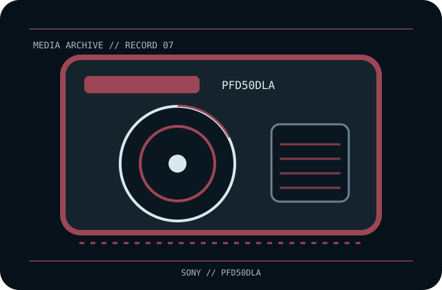

[ REMOVABLE MEDIA // OPTICAL CARTRIDGE ]
Sony XDCAM Professional Disc 50 GB Dual Layer (PFD50DLA)
Sony XDCAM Professional Disc, 120 mm dual-layer rewritable phase-change optical medium in a protective cartridge; PFD50DLA. This record identifies the media only; drive, host interface, firmware, software and any enclosure are separate.

EXACT SKU: Sony PFD50DLA. The record distinguishes nominal uncompressed capacity from any compressed estimate and documents generation-specific host compatibility.
Format generation, capacity and compatible drives
| Manufacturer / exact SKU | Sony PFD50DLA |
|---|---|
| Format / generation | Sony XDCAM Professional Disc, 120 mm dual-layer rewritable phase-change optical medium in a protective cartridge; PFD50DLA. |
| Native capacity | 50 GB nominal native capacity, dual layer. |
| Compressed capacity | Not applicable as an optical-media rating; file compression is external and workload-dependent. |
| Compatible drive generations | Sony XDCAM Professional Disc equipment explicitly supporting 50 GB dual-layer media. PDW-U1/U2/U4 and compatible XDCAM decks are potential hosts, but the individual model/firmware must list dual-layer support; early single-layer systems may not. |
| Interface and scope | The cartridge/disc has no direct host-computer interface. The compatible drive supplies its own SAS, Fibre Channel, SCSI, USB or other host connection; check the exact drive specification and driver/software chain. |
| Compatibility caveat | 50 GB is the dual-layer medium capacity; it is not a consumer Blu-ray cartridge and should not be assumed readable by ordinary optical drives. PFD50DLA is rewritable; do not confuse it with Sony WORM or triple/quad-layer SKUs. |
Optical-cartridge handling and preservation
Retain the cartridge closed, in its case, away from dust, high heat, direct sunlight, moisture and impact. Do not touch the disc surface or open the case; keep its label and barcode legible. Use only a supported XDCAM drive, verify offloads with checksums and restore tests, and preserve multiple independent copies.
- Document the exact printed model, serial/batch or date code, write-protect/WORM status and source of the medium.
- For valuable data, keep at least two independently verified copies, record checksums, test restoration and plan migration before compatible hardware becomes unavailable.
Model-specific preservation and compatibility notes
Preservation note: a nominal capacity or WORM property does not establish future readability; retain supported drives, software and independent copies.
50 GB is the dual-layer medium capacity; it is not a consumer Blu-ray cartridge and should not be assumed readable by ordinary optical drives. PFD50DLA is rewritable; do not confuse it with Sony WORM or triple/quad-layer SKUs. Never infer interoperability from a similar cartridge shell, connector, brand or family name; confirm drive-generation support in the exact manufacturer's manual.
Manufacturer and archival references
- Sony Professional — Professional Disc media generationsManufacturer overview of Professional Disc media families and supported generations.
- Sony PFD-50DLA product information sheet (archival PDF copy)Model-specific dual-layer format and capacity record.
- Sony — Professional Disc lineup catalogueManufacturer-hosted lineup reference for distinct single/dual/triple-layer media.
Capacity, compatibility and handling are specific to this model and its supported drive generation. For legacy equipment, preserve the manual and test an end-to-end read before relying on the cartridge for migration.